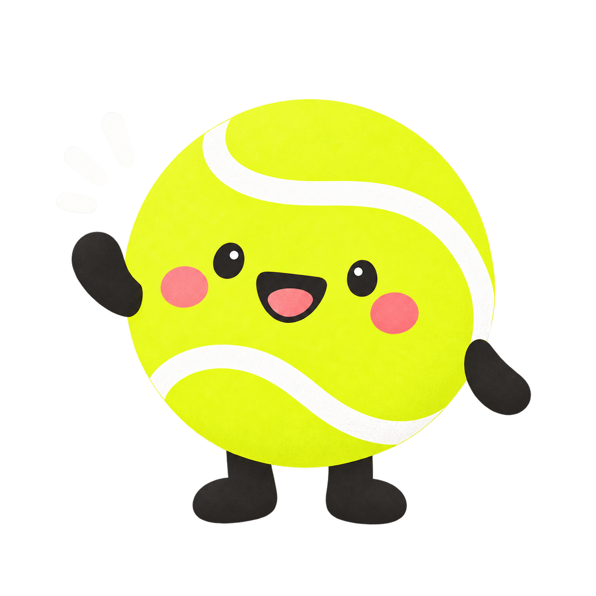

インターネット接続は必要ですか？
インストール後の記録・閲覧はオフラインで利用できます。アカウントの作成も不要です。

困ったときは、ここで確認しよう！
テニスメモリー サポート
テニスメモリーは、練習でうまくいったことやコーチの助言、発見を記録するアプリです。振り返りやメモを読み返し、次の練習の作戦につなげられます。
お問い合わせインストール後の記録・閲覧はオフラインで利用できます。アカウントの作成も不要です。
振り返り、メモ、作戦、ミッションなどのデータは、利用している端末のアプリ内に保存されます。開発者のサーバーへの送信やクラウド同期は行いません。
アプリのバックアップ・データの書き出し・機種変更時の移行機能はありません。アプリを削除したり、端末を初期化したりすると記録を失う場合があります。開発者から記録を復元することはできません。
ホーム右上から「設定」を開き、「全データ削除」を選んで確認操作を行ってください。記録や下書き、設定が削除されます。この操作は取り消せません。
下記のメール窓口へ、症状と再現手順をお知らせください。データが消える可能性があるため、アプリの削除・再インストールや全データ削除を試す前にご相談ください。
不具合の報告、ご質問、ご要望は、テニスメモリー開発者のサポート窓口へメールでお送りください。
tenis.memory.support@gmail.com
不具合については、分かる範囲で次の情報をお知らせください。
記録の本文など、個人的な内容を送る必要はありません。メールアプリが開かない場合は、上のアドレスをコピーしてお使いください。